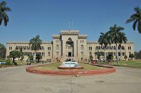

Hyderabad History
-

The Charminar
The Charminar ('four minarets') is a monument located in Hyderabad, Telangana, India. Constructed in 1591, the landmark is a symbol of Hyderabad and officially incorporated in the emblem of Telangana.[3] The Charminar's long history includes the existence of a mosque on its top floor for more than 425 years. While both historically and religiously significant, it is also known for its popular and busy local markets surrounding the structure, and has become one of the most frequented tourist attractions in Hyderabad.
-

Osmania University
The Osmania University was brought into existence in 1918 through a firman of Mir Osman Ali Khan, the last Nizam of Hyderabad. The need for a university in Hyderabad State was felt for a long time, and in 1917, Sir Akbar Hydari, in a memorandum to the Education Minister, emphasised the need to establish a university with Urdu as the medium of instruction "as it is the language of the widest currency in India".
-

Birla Mandir
Birla Mandir (Birla Temple) refers to different Hindu temples or Mandirs built by the Birla family, in different cities across India. All these temples are magnificently built, some of them in white marble or in sandstone. The temples are generally located in a prominent location, carefully designed to accommodate a large number of visitors. The worship and discourses are well organized. The first one was built in 1939 in Delhi collectively by Jugal Kishore Birla and his brothers, as well their father. Later temples have been built by, and are managed by different branches of the family. For both of the temples in Varanasi, the Birlas joined other donors to support the cost.